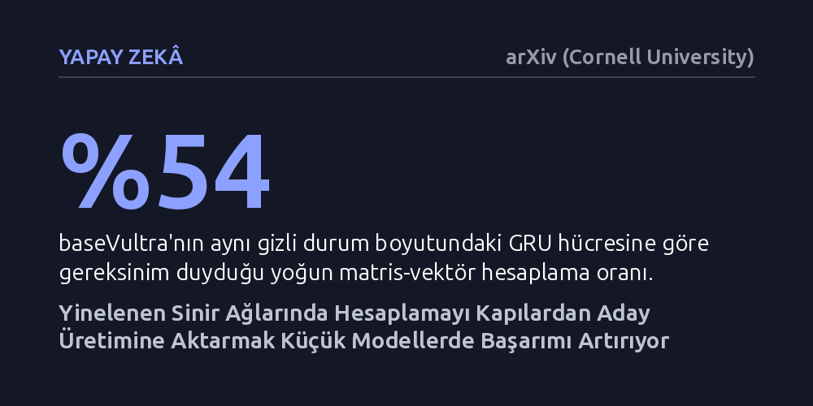

YAPAY-ZEKA · arXiv (Cornell University) · 2026-10-25
Yinelenen yapay sinir ağlarında hesaplama yükünün kapılar yerine aday durum üretimine ayrılmasının model başarımına etkisi araştırıldı. Geliştirilen baseVultra mimarisi kısıtlı bellekli küçük modellerde LSTM ile GRU'yu geçerken, model boyutu büyüdükçe bu avantajın ortadan kalktığı görüldü.
Yıllardır sorgulanmadan kullanılan kapı ağırlıklı mimariler yerine, kısıtlı kaynaklara sahip küçük modellerde hesaplama gücünün doğrudan aday bilgi üretimine aktarılmasının daha verimli olduğunu gösteriyor.

Metin, ses veya zaman serisi gibi sıralı verileri işlerken yapay zekanın başvurduğu temel yöntemlerden biri yinelenen sinir ağlarıdır. Günümüzde dikkat mekanizmalı büyük dönüştürücü modelleri öne çıksa da, cihaz üzerinde anlık veri akışını kesintisiz işlemek gerektiğinde LSTM ve GRU gibi klasik yapay sinir ağı hücreleri halen geniş biçimde kullanılmaktadır. Bu geleneksel mimarilerde hesaplama bütçesinin önemli bir kısmı 'kapı' adı verilen mekanizmalara harcanır. Kapılar, bilginin ne kadarının unutulacağını veya hatırlanacağını belirleyen bekçiler gibidir.
Ancak bu yerleşik tasarım beraberinde temel bir soruyu getiriyor: Sınırlı bir hesaplama bütçemiz olduğunda bu bütçeyi kapı filtrelerine mi yoksa asıl yeni bilgiyi üreten aday durum mekanizmasına mı harcamalıyız? Yıllardır LSTM ve GRU'nun kapı ağırlıklı yapısı varsayılan standart olarak kabul görüyordu. Bu çalışma, söz konusu bütçe dağılımını tersine çevirmeyi ve kapıları olabildiğince hafifletip asıl hesaplama gücünü doğrudan aday bilgi üretimine odaklamayı öneriyor.
Yazar bu fikri sınamak için 'baseVultra' adını verdiği yeni bir yinelenen hücre mimarisi geliştirdi. Bu mimaride, geleneksel modellerdeki gibi her kapı için ayrı ayrı büyük matris çarpımları yapmak yerine, yoğun hesaplama yükü tek bir aday üretim matrisinde toplanıyor. Kapılar ise yalnızca doğrusal karmaşıklığa sahip hafif, köşegen etkileşimlerle kontrol ediliyor.
Aday bilginin üretimi; bu yoğun matris dalı, iki adet düşük dereceli yardımcı dal, bir hareketli ortalama önbelleği ve öğrenilebilir harmanlama adımlarıyla destekleniyor. Ayrıca kapı mekanizması, iki adım önceki gizli duruma hafif ikinci dereceden terimlerle erişebiliyor. Modelin başarımı; tek katmanlı ve 200 bin parametreli TinyShakespeare karakter modelleme görevi, yaklaşık 45 kat daha büyük text8 veri kümesi ve bellek kapasitesini ölçen biçimsel dil testleri üzerinde LSTM ve GRU modelleriyle karşılaştırıldı.
Deneyler, hesaplama bütçesini kapılardan aday üretime kaydırmanın her senaryoda değil, özellikle kısıtlı kaynaklara sahip durumlarda işe yaradığını ortaya koydu. 200 bin parametreli TinyShakespeare testinde baseVultra, 1.594 doğrulama kaybı elde ederek aynı parametre sayısına sahip LSTM (1.604) ve GRU (1.616) modellerini geride bıraktı. Üstelik bu başarıyı, benzer gizli boyutlu GRU modeline göre yoğun matris-vektör hesaplamalarını yaklaşık yüzde 54 oranında tutarak sağladı.
Biçimsel dil mantığını test eden Counter görevinde de benzer bir tablo görüldü. Gizli durum boyutu 16 gibi çok dar bir kapasitede tutulduğunda baseVultra, eğitim dağılımı dışındaki testlerde 0.991 doğruluk yakalayarak GRU'nun (0.761) ve LSTM'nin (0.691) açık ara önüne geçti. Ancak gizli durum boyutu büyüdükçe bu performans farkı kademeli olarak kapandı. Yaklaşık 45 kat daha büyük text8 kıyaslamasında ise baseVultra 1.854 bayt/bit (bpc) değerine ulaşarak tam kapılı hücrelerle (GRU 1.849, LSTM 1.837) rekabetçi bir seviyede kaldı fakat onların önüne geçemedi.
Elde edilen bulgular, yapay zeka mimarisinde her duruma uyan tek bir reçete olmadığını net bir şekilde gösteriyor. Makalenin kendi ifadesiyle, "the benefit is concentrated in compact regimes, while full-gate cells remain competitive at scale" (kazanım kompakt rejimlerde yoğunlaşırken, tam kapılı hücreler ölçek büyüdüğünde rekabetçi kalmayı sürdürüyor). Dolayısıyla hesaplama gücünü kapılardan aday üretime aktarmak, özellikle giyilebilir teknolojiler, mikrodenetleyiciler ve kısıtlı belleğe sahip uç cihazlardaki küçük modeller için somut bir verimlilik avantajı vadediyor.
Buna karşın, büyük ölçekli dil modellerinde veya yüksek bellek kapasitesinin sorun olmadığı durumlarda klasik kapı mekanizmalarının yerini bırakması için yeterli bir kanıt bulunmuyor. Ayrıca çalışmanın henüz bağımsız hakemler tarafından değerlendirilmemiş bir önbaskı olduğunu ve deneylerin sınırlı kıyaslama kümeleri üzerinde yapıldığını unutmamak gerekiyor.